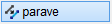
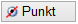
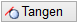

")
")
Verschieben vorhandener Linien um einen Betrag oder auf einen Punkt. Aktivieren Sie Retan, wenn Sie mehrere Linien gleichzeitig verschieben möchten. Die zuletzt angeklickte Linie ist die Bezugslinie.
|
Tipp: |
|
Sollen angeschlossene Linien ebenfalls verschoben werden, benutzen Sie die Funktion [Konst1 | Dehnen → LiPaVe]. |

Die Verschieberichtung wird beim Anklicken der Bezugslinie durch die Position des Cursors bestimmt. Wenn Sie die Linie z. B. auf der linken Seite anklicken, wird diese nach links verschoben. Die Eingabe eines negativen Wertes ist nicht möglich.
So wird's gemacht:
§Klicken Sie die Bezugslinie auf der Seite an, zu welcher verschoben werden soll. [Welche Linien(n)].
-Die Seite der Bezugslinie ist nur für die Abfrage [Wert eing.] relevant.
-Die Mitte des Fangbereichs liegt auf der Seite der zukünftigen Linie.
§Geben Sie einen Wert für den Abstand zur Bezugslinie ein und bestätigen Sie mit der Eingabetaste. [Wert eing. / Punkt andr. / frei].
-Die Linie wird um den eingegebenen Wert verschoben. Sie können sofort eine weitere Linie verschieben.
-Sie können die Linie auch frei verschieben [frei] (immer parallel zur Bezugslinie) oder einen Punkt fangen (Anfangs-, Mittel- oder Endpunkt) [Punkt andr.]. Mit Linksklick können Sie die Linie absetzen.
Um die Linie an einen Kreis oder Teilkreis zu verschieben
§Fahren Sie mit dem Cursor auf die Bezugslinie und klicken Sie diese an. [Welche Linie(n)].
Die Linie wird hervorgehoben.
§Klicken Sie den Kreis oder Teilkreis an. [Wert eing. / Punkt andr. / frei].
Die Schaltflächen Punkt und Tangen werden aktiv.
 |
Die Parallele wird an den nächstgelegenen Endpunkt verschoben. |
 |
Die Linie wird tangential an den Kreis oder Teilkreis gelegt. |
Wenn Sie zur Ziellinie noch eine Differenz eingeben möchten, stellen Sie Retan ein.
§Klicken Sie eine der Schaltflächen an, um die Linie zu verschieben.
Die Linie wird gezeichnet. Sie können sofort eine weitere Linie wählen.
Zugehörige Referenzen: